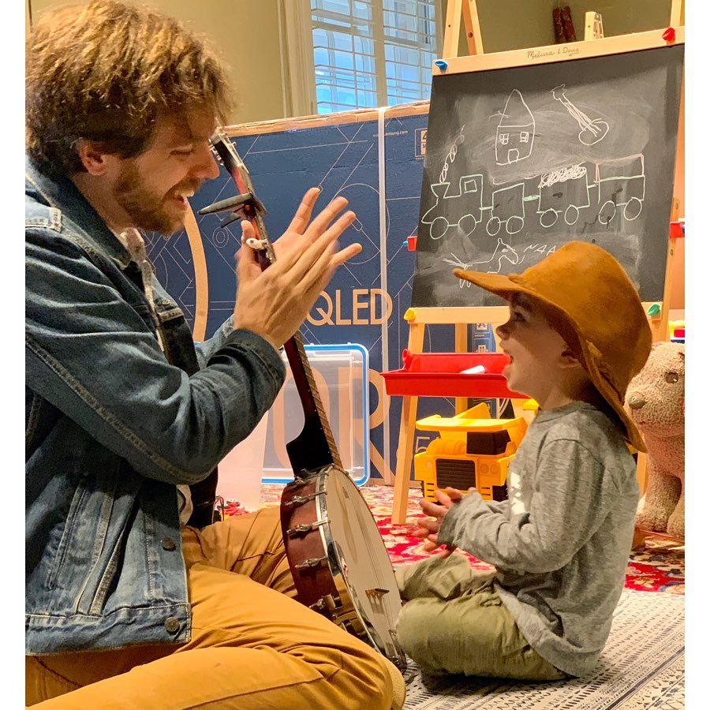

My name is Isaac Arnold, and I am a photographer currently based out of Houston, TX. When photography work slowed down due to the global pandemic, I viewed it as the perfect time to acquire a useful, new skill set. I began my coding journey in September of 2020. Aside from photography, I also have a passion for playing music. I play the ukulele and the banjo. The photo to the left is of me sharing my love of music with my nephew.
My goal in learning to code is to establish a skill set that will offer me job security in an exciting and growing field. While I am new to this field, I already find myself drawn to the puzzle solving aspect of coding. It offers much more room for creativity than I would have originally guessed. I have actually found many parallels between coding and photography that I would not have expected as recently as a month ago. I look forward to continuing my journey (and the joys and frustrations that are guaranteed to come along the way).